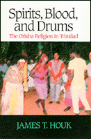

An anthropologist demystifies a fascinating , eclectic Caribbean religion
An anthropologist demystifies a fascinating , eclectic Caribbean religion


 An anthropologist demystifies a fascinating , eclectic Caribbean religion
An anthropologist demystifies a fascinating , eclectic Caribbean religion

|  |
Spirits, Blood, and DrumsThe Orisha Religion in TrinidadJames T. Houkpaper EAN: 978-1-56639-350-8 (ISBN: 1-56639-350-7) |
"When I began my work in Trinidad, I remained a curious bystander during the first summer of my fieldwork. When I returned for a year-long stay, I gradually moved into the active participant group. Finally, after my initiation and once I began serving as a drummer, I moved up. ...My movement from the fingers to near 'center stage' occured as my knowledge of and experiences in the religion grew."
— James T. Houk, from Chapter 9
James Houk's field work in Trinidad and subsequent involvement in the Orisha religion allows him a uniquely intimate perspective on a complex and eclectic religion. Originating in Nigeria, Orisha combines elements of African religions (notably Yoruba), Catholicism, Hinduism, Protestantism Spiritual Baptist, and Kabbalah. A religion of spirits and spirit possession, ceremonies and feasts, churches and shrines, sacrifices and sacred objects, Orisha is constantly shifting and unstable, its practice widely varied. As a belief system, it is a powerful presence in the social structure, culture, and, more recently, the political realm of Trinidad.
Houk carefully examines the historical forces that have transformed Orisha from a relatively simple religion in colonial Trinidad to an abstruse mix of belief, ritual, and symbolism. The voices of worshippers and Orisha leaders spring to life the intensity and power of the religion. Houk's own recounting of participation in many of the mystical ceremonies, including taking on the important role of drummer in several feasts, his initiation into Orisha, and his exceptional field research provide fascinating details essential in understanding the development of this Caribbean religion.
Excerpt available at www.temple.edu/tempress
"This welcome study gives much needed attention to the various roots and influences within the Orisha complex in Trinidad and serves to establish James Houk as a leading scholar of African-Caribbean religions. Must reading for Trinidad specialists. Highly recommended."
—Stephen D. Glaxier, University of Nebraska
List of Tables and Illustrations
Preface
Acknowledgments
Part I
1. Orisha Experiences
2. Religion, Postmodernism, and Methodology
3. The Setting
Part II
4. African Roots of the Orisha Religion
5. Catholicism and the Orisha Religion
6. The Spiritual Baptists
7. Hinduism and the Kabbalah
Part III
8. Spirits and Spirit Possession
9. Social Organization of the Orisha Religion
10. The Orisha and Their Abodes
11. The Ebo, Feast for the Gods
Part IV
12. The Orisha Religion as an Open System
13. Syncretism and Electicism versus Africanization
14. The Transmission of Religious Knowledge in the Orisha Religion
15. The Transformation of the Orisha Religious System
Appendix A: A Demographic Estimate of Spiritual Baptists
Appendix B: A Demographic Estimate of Orisha Worshipers
Notes
Glossary
References
Index
James T. Houk, an independent scholar, holds a Ph. D. in anthropology from Tulane University and has published several articles on Caribbean religion.
Anthropology
Latin American/Caribbean Studies
© 2015 Temple University. All Rights Reserved. This page: http://www.temple.edu/tempress/titles/983_reg.html.